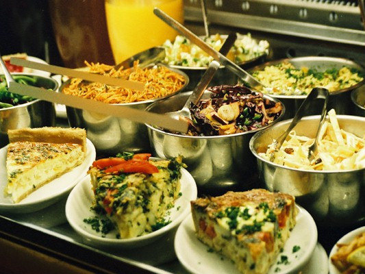
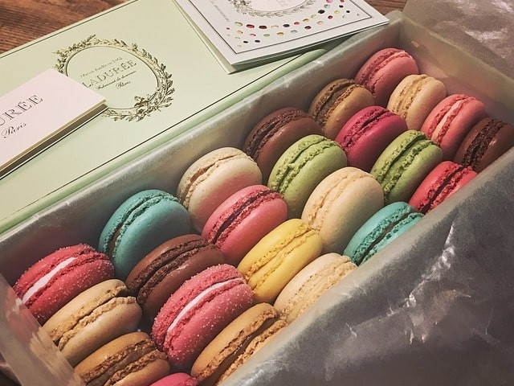
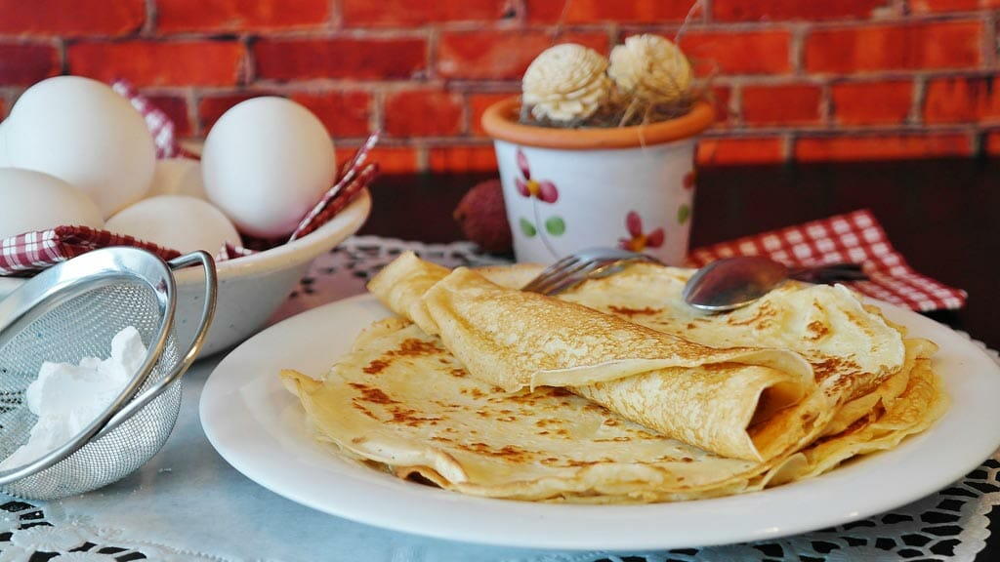

Parigi a tavola
Parigi è la città dell’amore, delle luci e dell’arte, ma è anche e soprattutto una delle capitali della gastronomia mondiale: vi troverete il meglio della cucina francese e proposte culinarie internazionali. Le vostre papille gustative non troveranno in altre città del mondo gli stessi sapori e le stesse esperienze. La cucina francese è una cucina raffinata, creativa e molto originale, che seduce tutti i buongustai. Spesso è (arbitrariamente) identificata con la "nouvelle cuisine", ed è famosa nel mondo per la sua capacità di elaborare fantasiose preparazioni. Ma i francesi in realtà amano mangiare anche con molta semplicità.
  Parigi è una città che ha un’infinità di ristoranti, una selezione talmente ampia da creare molta confusione, specialmente se dopo aver camminato per ore desiderate mangiare qualcosa di "tipico". Ma, allo stesso tempo, la città offre un ristorante per ogni stagione e un piatto per ogni esigenza di gusto. Ce n’è davvero per tutti i palati! I luoghi più tipici dove provare la cucina francese sono i Bistrot e le Brasserie. I Bistrot possono essere paragonati alle nostre trattorie e sono caratterizzati da cucina semplice di grande tradizione popolare, una buona carta dei vini, servizio informale e conto accettabile. Le Brasserie, letteralmente "fabbrica di birra", nacquero come luoghi di produzione e consumo della birra che con il passare del tempo si sono trasformati in veri e propri ristoranti dove gustare i piatti tipici della tradizione parigina. Nelle brasserie potete quindi accomodarvi anche solo per prendere qualcosa da bere (un verre, come direbbe un vero parigino) in compagnia, che sia un calice di vino, una birra, un té o un caffé. Accanto alla cucina francese, come in tutte le grandi metropoli, troverete rappresentate le specialità culinarie del mondo intero. Purtroppo, però, la qualità non è onnipresente, soprattutto se i prezzi non sono particolarmente alti. Mangiare bene senza spendere troppo è impresa ardua! In linea generale possiamo considerare come ristorante "economico" a Parigi, un posto dove si può mangiare un pasto di 3 portate a circa 20/25 euro a persona, un ristorante "medio" ad € 30/40 a persona, mentre un ristorante di alta gamma, "gastronomico" e magari stellato, richiederà una spesa di almeno € 60 a persona fino ad arrivare ad € 300 circa per persona, come nel caso dei famosi ristoranti Jules Verne e la Tour d'Argent. Le bevande sono da intendersi sempre escluse al prezzo indicativo del menu. Badate però…non bisogna confondere Parigi col resto del paese, in Francia, appena fuori dalla capitale, si mangia benissimo anche senza prosciugare il conto in banca! Parigi, però, è la grande città, quella delle opportunità, la ville lumière bella e romantica che attrae lavoratori e turisti dal mondo intero! Di conseguenza, la domanda è molto più alta e i prezzi salgono nonostante la qualità non sia sempre delle migliori. In questa sezione, vi proponiamo solo pochi indirizzi per una lunga cena o per un pasto frugale, dove, però, difficilmente sarete delusi! Il cibo è una parte fondamentale del viaggio, quindi, Bon Appétit!!!